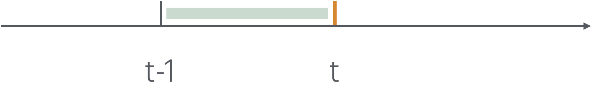

对冲交易归因分析
Note
对对冲交易进行尽可能全面且正确的归因有助于跟踪交易执行的效果，校准模型偏差，以便尽早发现交易以及模型参数中的问题，修正或者制定更为有效的符合市场实际情况的对冲交易策略。
期权价格的全微分
对期权的价格 \(V(S,r,q,\sigma, t) = V(S, t)\) [1] 进行全微分，我们有
根据具有连续分红个股（适用于股指期货对冲指数期权）的BSM偏微分方程，
把 (2) 式中期权价格对时间的偏导代入到 (1) 式中，并忽略高阶偏导项，整理后可得到
(3) 式右侧中的每一项都具有明确的金融含义。接下来我们通过解构 (3) 式右侧中的各个子项，并与实际对冲交易结果相结合，实现对冲交易的归因分析。
期权价值变动的因子分解
Note
基于无风险套利原则的无风险利率收益。可以理解为，对于期权的买卖双方而言，卖方从买方收取了 \(V\) 的期权费（合约价值），这比资金 理应 赚取一笔无风险收益。
Note
我们可以把这一项拆解为两项
\(S\frac{\partial V}{\partial S}qdt\), 对冲持仓的分红收益。
\(-S\frac{\partial V}{\partial S}rdt\), 对冲持仓的资金成本。
关于这两项，在股指期货对冲股指期权的场景中有更详细的阐述，我们将在后文中展开论述。
Note
对冲持仓的方向性收益。即持有挂钩标的，随着挂钩标的上涨或者下跌而带来的直接的交易盈亏。
Note
波动性收益。其中，\(\frac{dS^2}{S^2}\) 可以看做是 \(dt\) 时间段里的实际实现方差，而 \(\sigma^2dt\) 是理论方差或者定价方差。
注意到，BSM偏微分方程并不要求 \(\sigma\) 为常数，而我们对 \(V\) 的定价一般采用常数波动率，这样导致实际波动率与定价波动率之间存在差异。在定价相对公允的情况下，这一项累计起来应归于0附近。但是对某个考察的时间段 \(dt\) 里，这一项可能存在一些非0的波动。定期考察这一项有助于分析定价波动率与实际波动率之间的偏离情况。
Note
对冲持仓随时间变化带来的收益。与波动性收益类似，波动收益衡量的是对冲持仓数量 (即 \(\frac{\partial V}{\partial S}\) )随挂钩标的价格变化而带来的收益，此项衡量对冲持仓数量随时间变化而带来的收益。
考察这两项的意义在于，当对冲持仓数量随价格与时间变化带来的收益项显著影响对冲交易效果，那么在对冲交易维度上就要审慎优化投资组合，控制相关希腊字母，并在时空维度上，把握对冲交易的节奏。
利用股指期货对冲股指期权情形下的对冲交易盈亏归因
在利用股指期货对冲股指期权的情形下，存在跨品种以及多品种对冲的问题，这是因为在对冲交易中，我们往往采用不同期限的股指期货组合的方式来对冲相关场外期权，以实现收益最大化的目的。 虽然股指期货与现货指数原则上是紧密联动，但由于市场因素，短期内的波动性又可能大相径庭。这也让此类对冲交易的全面准确归因变得更加复杂。
设在对冲挂钩标的为 \(S\) 的场外期权交易中，我们持有 \(N\) 个期货合约 \(F_{1...N}\)， 持有合约数量分别为 \(\Delta^F_{1...N}\)。
\(F_{1...N}\) 满足，
其中 \(i = 1\ldots N\), \(q_i\) 表示期货合约 \(F_i\) 相对指数的对数超额收益率。
我们用 \(\Delta^S = \frac{\partial V}{\partial S}\) 表示理论应持有的用来满足Delta对冲义务的股指现货数量，由于股指现货不能被交易，那么实际能交易的就是股指期货合约 \(F_{1...N}\)。不难知道 [2]，如欲完整对冲，应满足
实际对冲中，交易员出于对行情的判断，场外期权投资组合总的风险特性的认知以及交易标的限制(如最小交易单位)等等实际情况，实际持仓未见能时时满足 (5) 式。 我们用 \(\Delta^{A}_i\) 持有期货合约 \(F_i\) 的实际持仓数量。接下来我们从 (3) 式出发，结合各项金融含义与实际对冲交易，以按交易日离散的方式，构建对冲交易的盈亏分析框架。
期权价值变动归因的离散化
{kind=link}
归因分析是回溯分析，如上图所示，是假定我们站在 t 时刻分析 t - 1 到 t 的对冲交易情况。
我们假定按日进行动态Delta对冲——即按日调整对冲持仓，对 (3) 式采用前向差分离散化，并利用希腊字母表达，除上述定义的变量以外，另外设有
\(\Delta t\) |
1个交易日对应的年化时间 |
表示 \(t- 1\rightarrow t\) 的年化时间间隔 |
\(\Delta S\) |
\(S_t - S_{t-1}\) |
表示挂钩标的在对应时间段的价格变化 |
\(\Delta F_i\) |
\(F_{i,t} - F_{i,t-1}\) |
表示股指期货合约 \(F_i\) 在对应时间段的价格变化 |
\(\Delta V\) |
\(V(S_{t}，t) - V(S_{t-1},t-1)\) |
表示期权价值在对应时间段的价格变化 |
\(\Delta^S\) |
\(\frac{\partial V}{\partial S}|_{t-1}\) |
t - 1 时刻场外期权合约的总的理论Delta数量 |
\(\Gamma^S\) |
\(\frac{\partial^2V}{\partial S^2}\) |
t - 1 时刻场外期权的总的Gamma值 |
\(C^S\) |
\(\frac{\partial^2V}{\partial S\partial t}\) |
t - 1 时刻场外期权的总的Charm值——Delta bleed或Delta Decay |
另，为了简化表达，在下面的论述中，我们用 \(S = S_{t-1}\), \(F_i = F_{i,t-1}\) , \(\Delta_i^A\) 表示 \(t-1\) 时刻持有期货合约 \(F_i\) 的数量，\(M\) 表示 \(t-1\) 时刻通过期权费保证金等方式收取的存续资金总额。
那么对 (3) 式按日离散后有
而这个时间段里，对冲方，通过持有股指期货合约的方向性收益，相关的资金成本以及资金收益合计为
其中，\(L^A\) 表示的是，当前持仓股指期货的实际保证金比例。
那么这一时间段——一个交易日——从上一交易日的日终到本交易日终的对冲交易盈亏为
接下来，我们就可以根据各分项的金融含义对 P&L 进行拆分。
对冲交易盈亏归因
Note
方向性多空盈亏
指的是对冲持仓金额相对理论计算出来的持仓金额之间的差异而带来的收益或亏损。这部分是相对挂钩标的 \(S\) 的涨跌幅而言的。
Note
基差多空盈亏
指的是实际持有期货合约与假设按理论Delta Cash, 即持有期货合约的总头寸为 \(\Delta^S S\) 来持有期货合约，所获得的基差收益的差值。这里假设，如果满仓持有期货合约，按实际持仓等比例调整各个合约的持仓量。
Note
基差波动盈亏
\[\sum_i^N \Delta_i^A \frac{\Delta^S S}{\sum_i^N \Delta_i^A F_i} ( \Delta F_i - F_i\frac{\Delta S}{S}) - \Delta^S S q\Delta t\]
指的是假设按理论Delta Cash, 即 \(\Delta^S S\) 来持有期货合约所得到的基差收益与定价基差收益的差值。体现的是实际市场参数与定价参数之间的差异带来的盈亏。
Note
波动率盈亏
这一项，在动态Delta对冲中是无法通过交易来消除的。可以看到，如果 \(\Gamma^S\) 为正——卖出Gamma为正的期权——卖方持有的Gamma头寸为负——也即我们常说的short Gamma——挂钩标的的实际波动越大卖方亏损越多，反之 如果卖方long Gamma, 那么挂钩标的实际波动越大，卖方在波动率上的盈利就越多。
Note
Delta Decay盈亏
这一项，按日频维度对齐Delta 敞口的动态对冲，也是无法消除的。好在一般这一项数量级相对其他项而言都是较微小的。不过在某些场景下，该项可能会带来重大不利影响，需要保持高度关注。
Note
资金无风险收益盈亏
指的是实际收取的期权费与保证金总额每个交易日所产生的无风险收益，与理论期权价值（注意此处如果保证金纳入了期权价值的计算，期权价值应包含保证金部分）每个交易日所产生的无风险收益之差。
Note
持仓资金成本盈亏
其中 \(L^S\) 表示的是理论对冲持仓的保证金比例。上式表示的是实际持仓占资成本与理论占资成本之差。